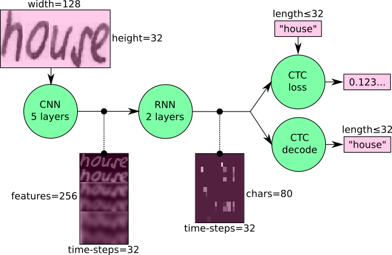
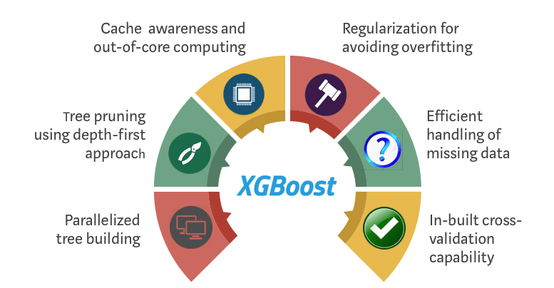

Implemented a conversational AI-powered movie recommendation chatbot using Python, Tensorflow, Flask, and the MovieLens dataset containing data from over 27000 movies.
Utilized NLP techniques using NLTK to build the chatbot and then integrated a machine-learning-based recommendation system to provide personalized movie suggestions to the user with an accuracy of 97%.
Developed a web-based platform, using NodeJS, ReactJS, JavaScript, ExpressJS, CSS, and MongoDB, for users to
share pictures and posts, including Like and Comment functionality.
Managed the web application by using the MERN stack and implemented user authentication and authorization using
JWT tokens.
Increased the code’s efficiency by 15% with the usage of React Hooks, Redux, and REST APIs.

Created a system that recognizes the handwritten characters in an image and returns the output as text.
Built an LSTM CNN model that fed the features from the IAM dataset, which contained over 10,000 images, to the
model.
Achieved an accuracy of 92% on the machine learning model and designed the frontend of the system using Flask,
HTML, and CSS where the users could upload the image as input and view the output in text format.
Performed EDA on the NYC 311 Service Requests dataset which contains more than 24 million service requests
made since 2010, using R.
Obtained the data using SODA API and developed around 30 visualizations to explore the different data trends.
Built a Neural Network model with an accuracy of 93% to classify the government agency that responds to a call.
Developed a web application using Flask that returns a list of all the relevant web APIs from a dataset based on the search provided. Parsed, cleaned, and loaded the dataset with 50K rows containing web API details into MongoDB compass. Queried the database from the server side by enabling 10 different filters on the client side using pymongo.
Developed a machine learning model using LDA topic modeling in Python to categorize news articles into different topics and to detect fake articles among a list of articles, which achieved 87 % accuracy.
Applied web scraping techniques using the BeautifulSoup library to collect 2000 news articles from the internet.
Performed NLP techniques like Stemming and Lemmatization on the data which boosted the accuracy by 5%.

Using the metrics published as part of this project, we can better understand the trends on Craigslist, a popular platform where buyers meet sellers. This project helps users to make informed decisions and helps the manufacturers better understand their market and their competitors as well.

Implemented different learning algorithms to create a Machine Learning model to detect Parkinson’s disease.
Chose acoustic voice features of around 3000 patients as the attributes to build the model.
Analyzed that the XGBoost algorithm produced 96% accuracy and the improved the speed by 10% when compared to
other algorithms. Executed and published the project as the team lead.